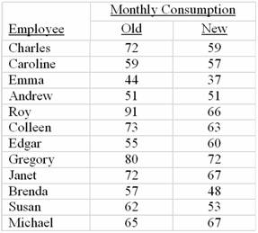

Paired-observation t; Type I
Paired-observation t; Type II
Independent-samples z; Type I
Independent-samples z; Type II
None of the above
H0: m1 - m2³ 1,500
H0: m1 - m2³ 0
H0: m1 - m2£ 1,500
H0: m1 - m2£ 0
H0: m1 - m2 = 1,500
1.330
1.734
1.645
2.101
1.96
2.33
9.16
1.53
0.146

H0: m1 - m2£ 0; H1: m1 - m2 > 0
H0: m1 - m2 = 0; H1: m1 - m2¹ 0
H0: mD£ 0; H1: mD < 0
H0: mD³ 0; H1: mD < 0
H0: mD = 0; H1: mD¹ 0
Reject H0 if the observed t is less than -1.796
Reject H0 if the absolute value of the observed t is greater than 2.074
Reject H0 if the observed t is less than -2.200
Reject H0 if the absolute value of the observed z is greater than 1.96
Reject H0 if the absolute value of the observed z is less than -1.645
T = -2.97
T = -1.42
T = -0.38
Z = -0.96
Z = -1.37
H0: pA - pB£ 0
H0: pA - pB³ 0
H0: pA - pB = 0
H0: pA - pB¹ 0
Z < - 1.96
Z < - 1.645
Z > 2.33
Z > 1.96
Z > 1.645
0.0351
0.0708
0.1401
0.3085
0.2266
The populations are not normally distributed
The populations have equivalent correlations
The populations have similar p-values
The populations have similar means
Not in excess of 3
In excess of 3 but not in excess of 5
In excess of 5 but not in excess of 7
In excess of 7 but not in excess of 9
In excess of 9
This is the end of the test. When you have completed all the questions and reviewed your answers, press the button below to grade the test.